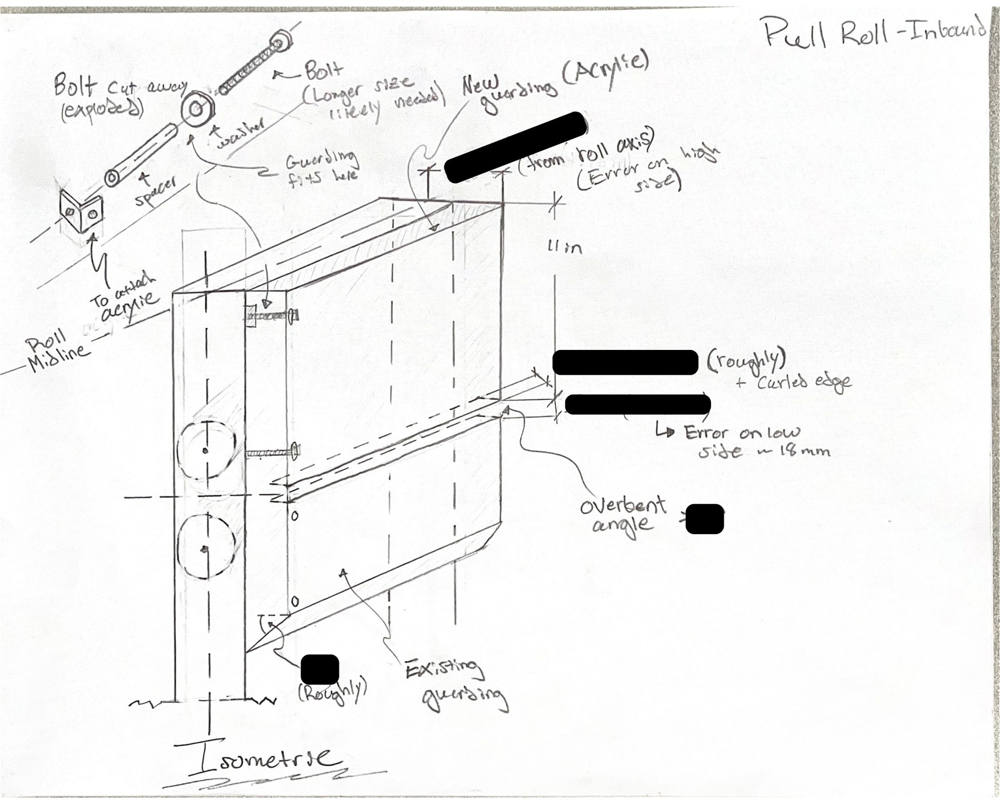
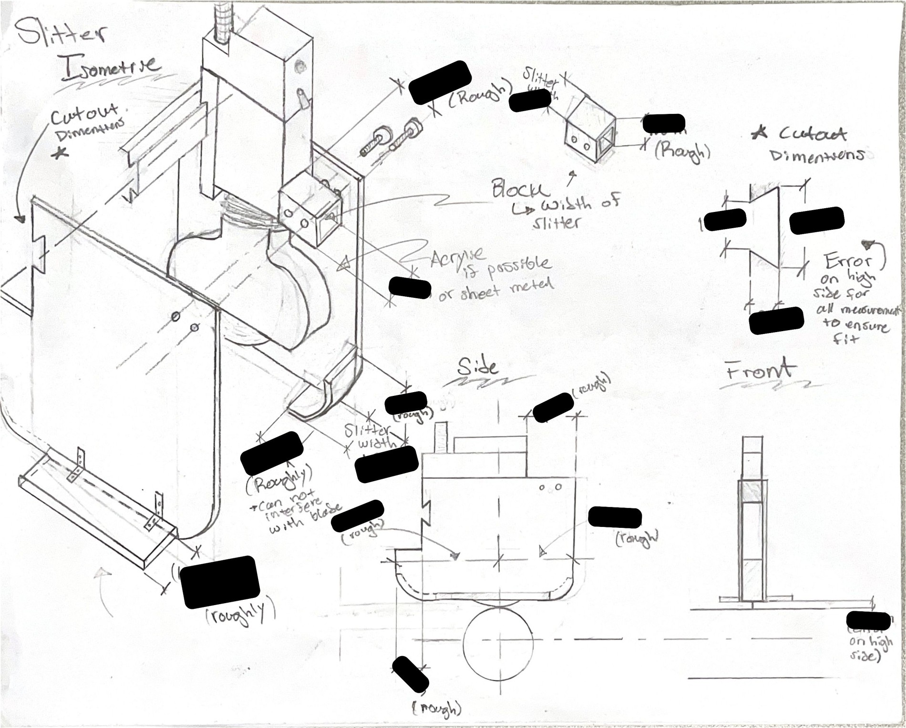
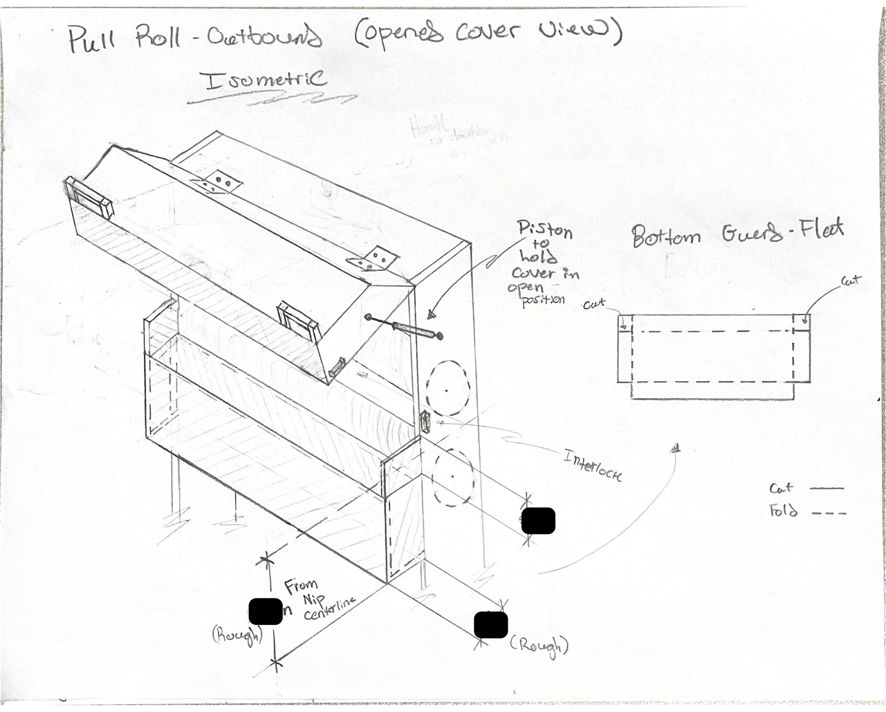
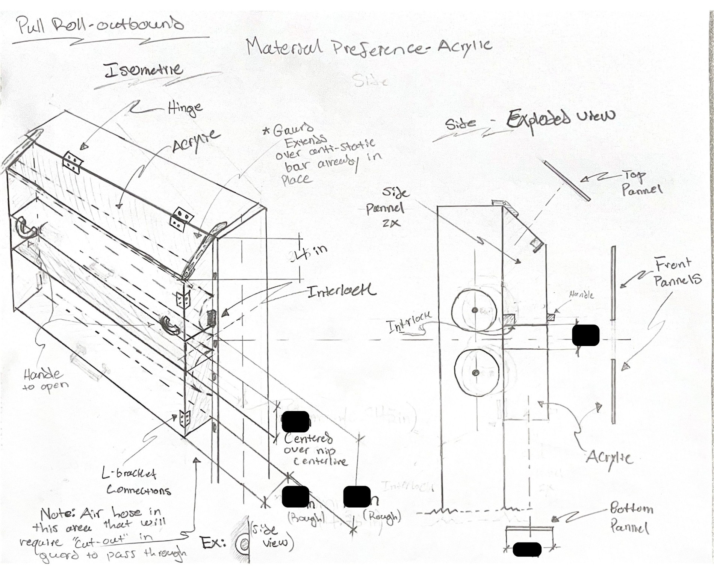

professional_projects
covestro_pilot_line_guarding
During my Covestro P&T internship, I led a project to close gaps identified in pilot line machine guarding. I collaborated with operators to design minimally intrusive guarding that improved safety while maintaining accessibility. I created mechanical drawings, coordinated fabrication, and oversaw installation troubleshooting. The project also included completing MOC (Management of Change) documentation and validating electrical guarding, ensuring compliance with safety standards and smooth implementation on the production floor.

Inbound pull roll guarding

Slitter stand guarding

Outbound pull roll guarding (open)

Outbound pull roll guarding (closed)